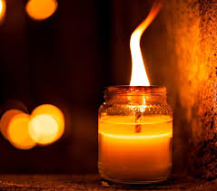
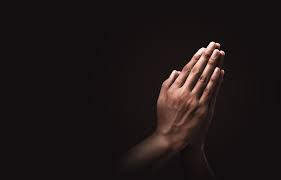
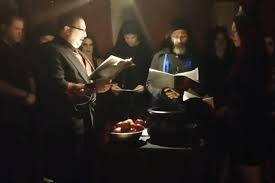
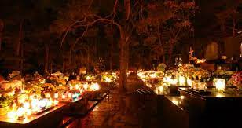

Święto Wszystkich Świętych
Święto Wszystkich Świętych, nazywane także Świętem Zmarłych, to ważne katolickie święto obchodzone 1 listopada.
Jest to dzień poświęcony modlitwie za zmarłych,
zwłaszcza za tych, którzy nie mają swojego osobistego święta w kalendarzu liturgicznym.
Zwyczaje związane ze Świętem Wszystkich Świętych:
- Zapalanie zniczy i składanie kwiatów na grobach bliskich.

- Modlitwa za dusze zmarłych w kościołach i cmentarzach.

- Msze św. w intencji zmarłych.

- Wizyty na cmentarzach i porządkowanie grobów.
